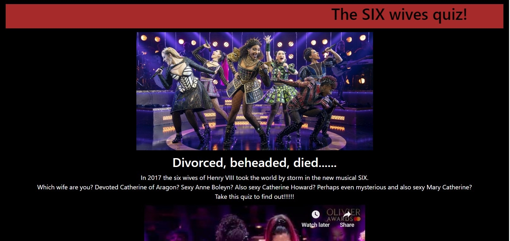

The SIX Wives Quiz
The SIX Wives Quiz is an internet quiz that pays homage to early examples of the genre, with its excessive
enthusiasm for the subject, answers that transparently point to particular results, and retro scrolling
text.

My new challenges in creating the SIX Wives Quiz were:
- Using a single page for the entire quiz, and changing the visibility of different elements to create
a user experience that feels like there are many pages.
- Creating and implementing a scoring system for the quiz.
To use a single page:
- I placed the different questions and answers into different div elements in the same HTML
file.
- Using Javascript, I created one function for each question, to change the visibilities of that question and the
next.
- Each of the answers the user selects calls the appropriate function, which will hide the current question and
display the next (or, for the final question, display the answer).
To create a scoring system, I thought about how quizzes work - which does sound very basic, but it did help:
- In my quiz, there are six wives, and six answers to each question, with each answer corresponding to one
wife.
- The simple approach seemed the best: add up how many of each wife's answers the user chooses, and then assign
them the wife whose answers they chose the most.
- This only falls down if there's no single wife they choose the most. What about if they choose half Anne Boleyn
and half Jane Seymour?
- I decided to embrace the reputation of internet quizzes as being unreliable and unrelated to reality, and
randomly determine the answer in these cases.
- With one exception, if the user doesn't choose a majority of any wife's answers, the function that determins
answers generates a random number and uses it to assign an answer.
- And that one exception? I'm a fan of easter eggs in this kind of thing, so if the user has a single point for
every wife, they're assigned the secret seventh wife of Henry VIII, Mary Catherine, who was a hidden envoy from
Ireland. Sadly, Mary Catherine never existed - except in our hearts.